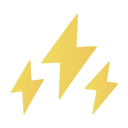
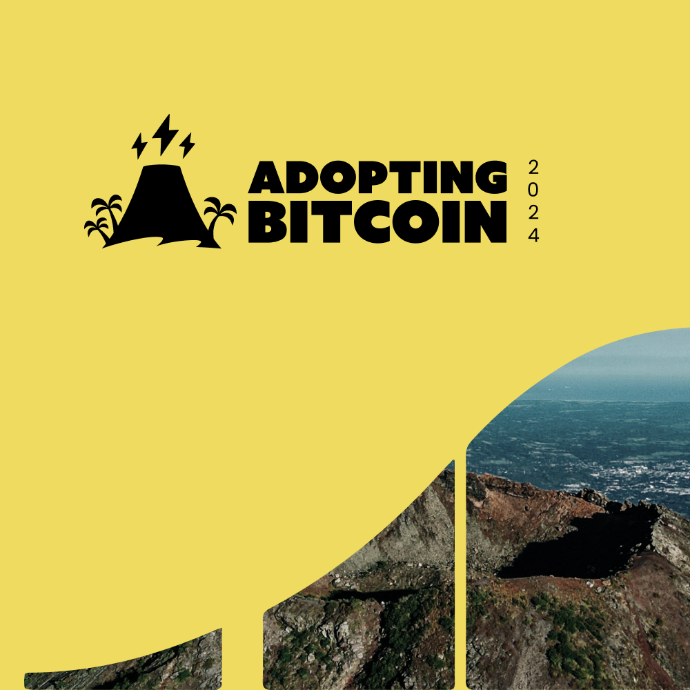
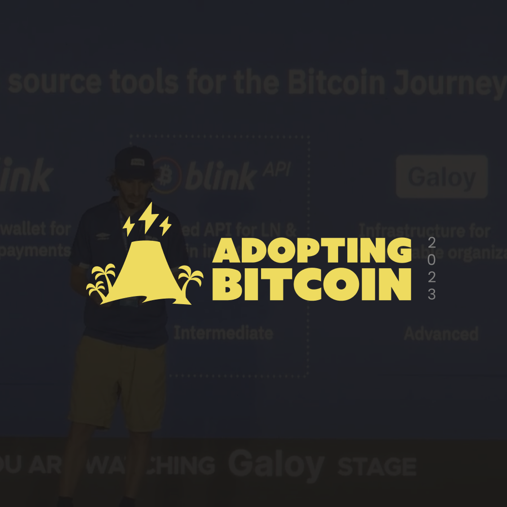
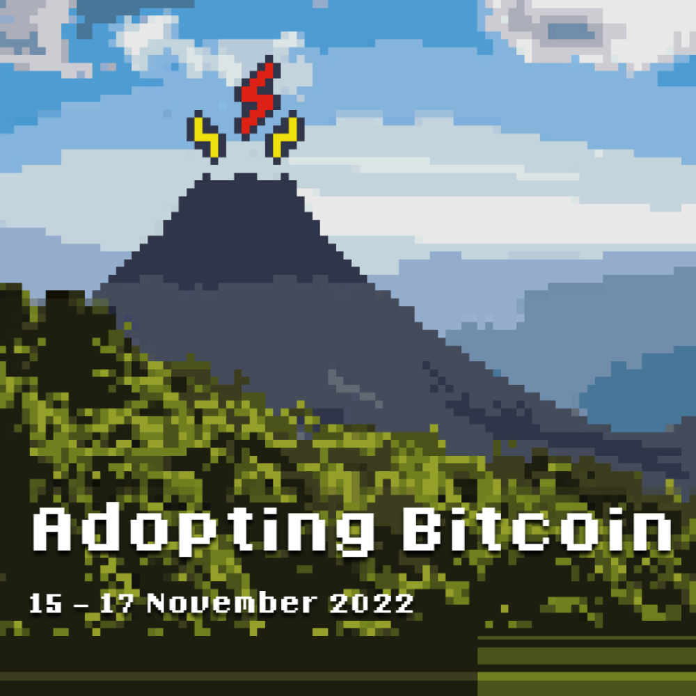
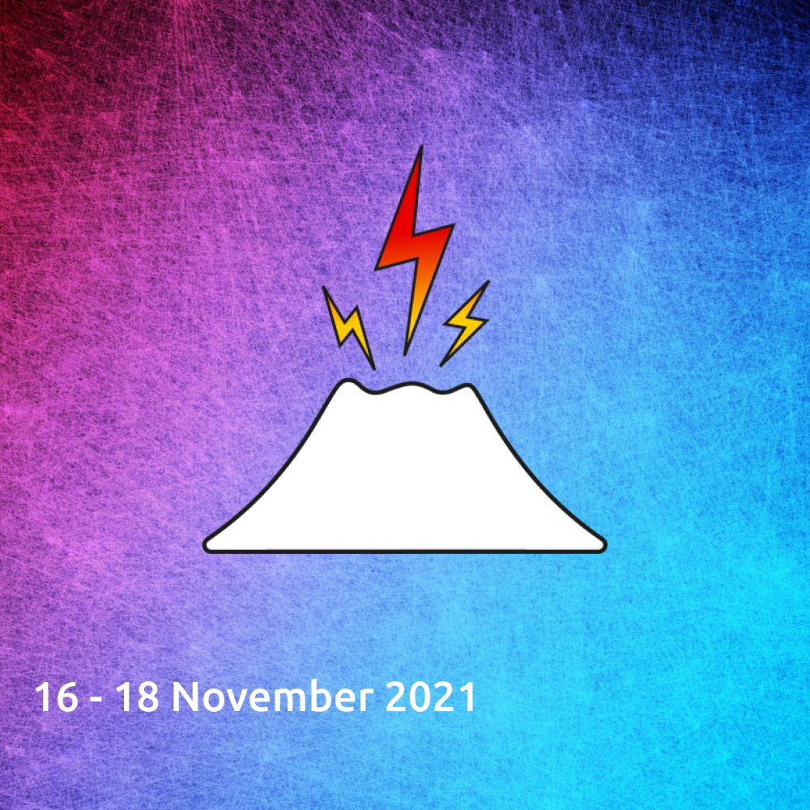
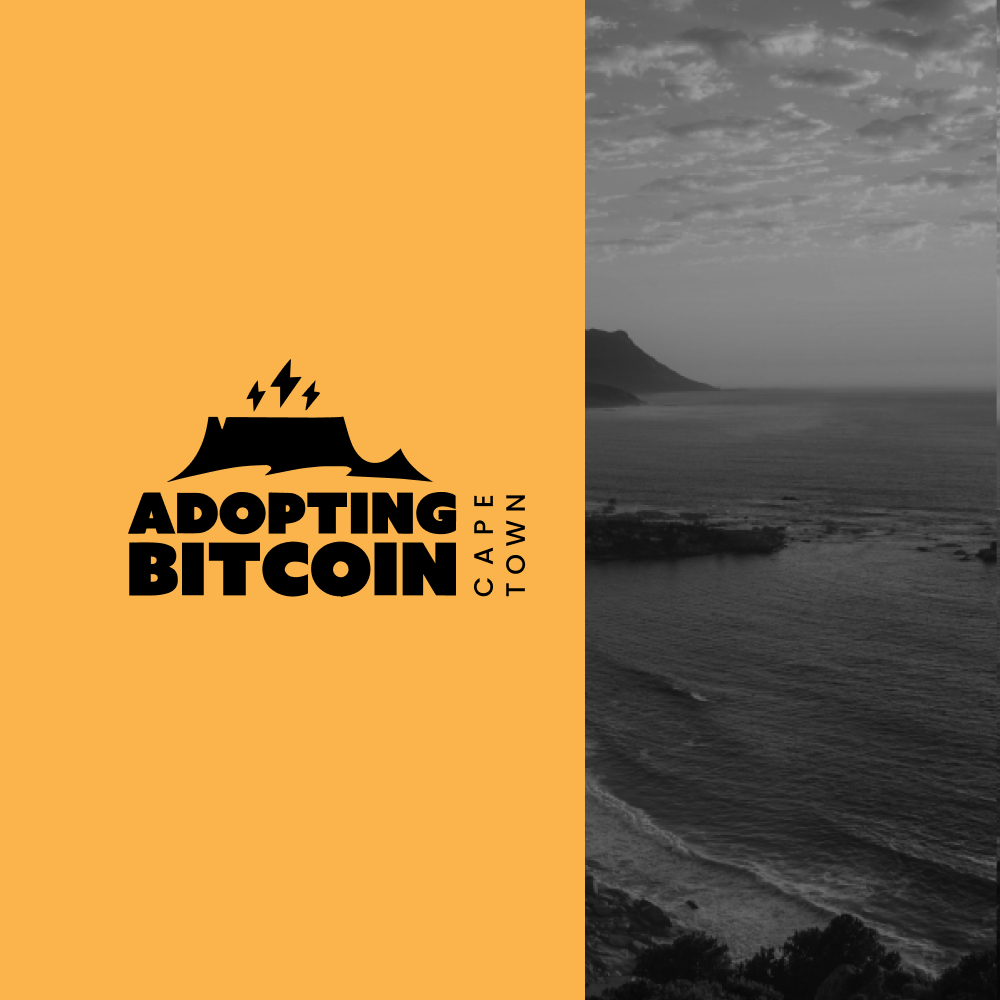
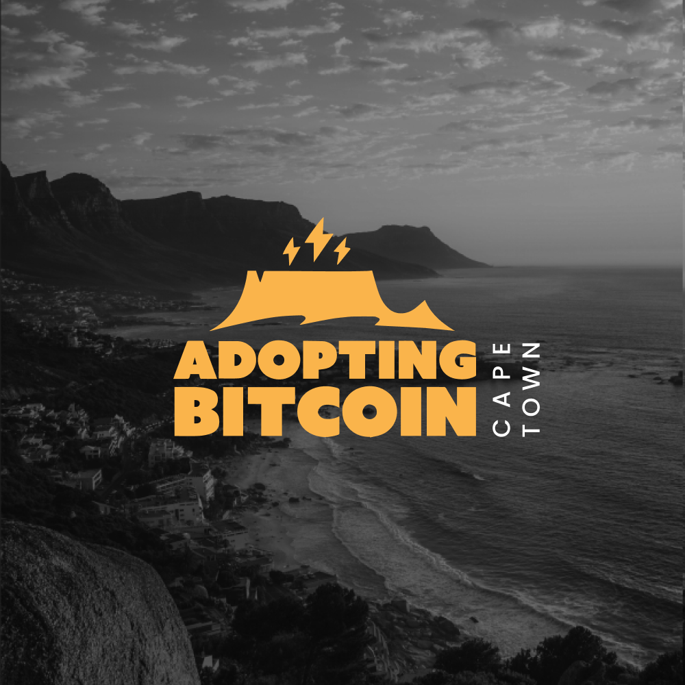

El Salvador
South Africa
Netherlands

Adopting Bitcoin 2024

Adopting Bitcoin 2023

Adopting Bitcoin 2022

Adopting Bitcoin 2021

Adopting Bitcoin Cape Town 2025

Adopting Bitcoin Cape Town 2024
Adopting Bitcoin Arnhem 2024
Adopting Bitcoin Code of Conduct
Contacts
Contacts
Contacts
Contacts
Contacts